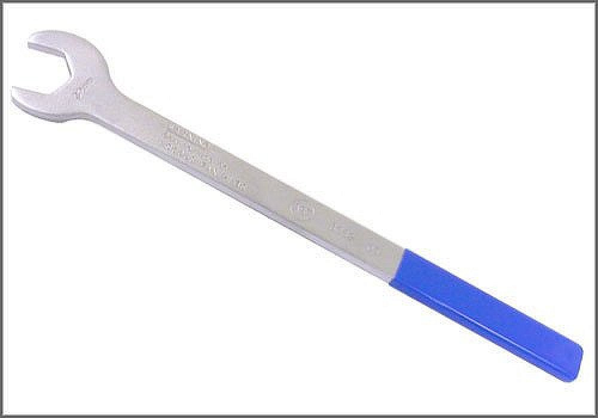

Fan Clutch: Tools and Equipment
32mm Fan Clutch Wrench
AST tool# 8032

32mm x 380mm long wrench used for the R and R of any 32mm fan clutch nuts. This tool is applicable to VW, Audi and BMW models with 32mm fan clutch nuts.
- Used for R and R of Fan Clutch
- Steel Construction
- Easy-Grip Handle
- Applicable to VW, Audi and BMW
Contact AST for pricing.
Assenmacher Specialty Tools
1-800-525-2943